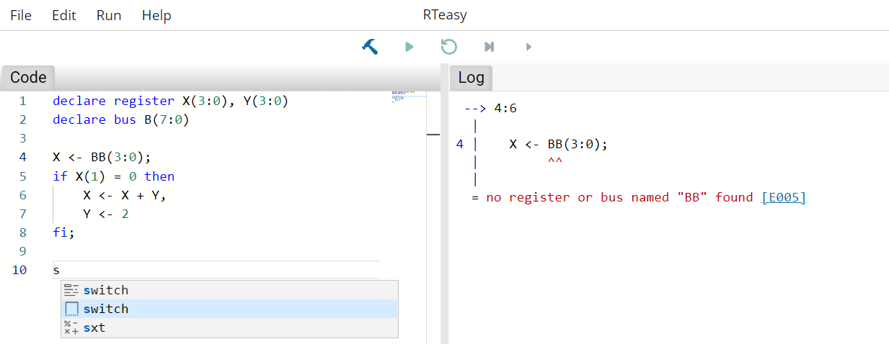

Introduction
RTeasy-Online is a development environment for the register transfer language RTeasy. With RTeasy it is possible to design and simulate register transfer programs. Moreover, execution unit and control unit can be extracted from the algorithms. Among other things, this makes it possible to export an RTeasy program to VHDL.
Tutorial
The tutorial is the main part of this book. It starts with an explanation of the language. After that there is a user guide for the IDE and for the CLI. This is followed by a few practical application examples and additional advanced/in-depth material.
If you are already familiar with RTeasy or RT code in general, you may want to jump straight to the examples to see what can be done with RTeasy.
Compiler Error Index
The compiler error index serves as an overview of all possible errors that can occur during compilation.
Code Blocks
You will find code blocks in many places in this book. They may contain several different icons for interacting with them:
| Icon | Description |
|---|---|
| Copies the code block into your local clipboard. | |
| Toggle visibility of "hidden" lines. Some examples will hide lines that are not particularly relevant to what is being illustrated. |
Here is an example:
declare register X(7:0) # <-- hidden by default
# Increment X by 1
X <- X + 1;
The Register Transfer Language RTeasy
A register transfer language (RT language) is used to describe the hardware using register operations. The following basic pattern is used for the operations:
Z <- f(X_1, X_2, ..., X_m)
where Z, X_1, X_2, ... , X_m represent identifiers for registers and the function f describes the operation. The result is then stored in Z.
An RTeasy program consists of a set of declarations followed by the actual algorithm. All declarations must be placed in the header of the program. Besides registers, buses, register arrays and memories can be declared. These are all explained in more detail in the next section.
An important concept in RTeasy is the difference between the clocked and the unclocked items. While registers, register arrays and memories are clocked, buses are unclocked. This means that values assigned to a register are only available in the next clock cycle. In contrast, values assigned to a bus are yet available in the same and only in this clock cycle.
Declarations
Before the actual algorithm, all items must first be defined. A declaration is composed of a declare followed by the type of the item, e.g. register, and finally the list of items you want to declare, separated by commas. All names may only contain uppercase letters, digits or underscores, whereby the first character may not be a digit.
Registers
Declare two registers R and C. Register R is 8 bits wide and ranges from 7 (MSB) to 0 (LSB). The register C is 1 bit wide, with the bit at position 0.
declare register R(7:0), C
Buses
Declare two buses B and SECOND_BUS. Bus B is 8 bits wide and ranges from 7 (MSB) to 0 (LSB). The bus SECOND_BUS is 1 bit wide, with the bit at position 5.
declare bus B(7:0), SECOND_BUS(5)
Register Arrays
Declare a register array named ARR. As with registers and buses, a bit range can be specified. The length of the register array is specified in brackets. The length must be a power of two.
declare register array ARR(7:0)[4]
Register arrays may be read no more than twice and written no more than once per execution path and cycle.
Memories
Declare a memory named MEM. Memories require two registers, whereby the first is the address register and the second is the data register. So in this case AR is the address register and DR is the data register. Thus the memory is of size 2^16 = 64 KByte and 1 byte wide.
declare register AR(15:0), DR(7:0)
declare memory MEM(AR, DR)
Inputs/Outputs
Declare an input IN and an output OUT. As far as the execution is concerned, outputs behave exactly as registers do. Inputs behave exactly as buses do, except that they are read-only and are not reset between clock cycles.
declare input IN(7:0)
declare output OUT(7:0)
Inputs and outputs define the interface of a program. The inputs and outputs become input and output ports respectively in the VHDL export.
Algorithm
The declarations are followed by the actual algorithm. The algorithm consists of a list of states that are executed sequentially. A state represents a clock cycle in which several micro operations are executed in parallel. Each state is terminated by a semicolon.
declare register A(3:0), B(3:0), REG(3:0)
# A simple state with two micro operations executed in parallel.
A <- A + 1, B <- B - 1;
# Another state with only one micro operation.
REG <- A and B;
Label
In addition to the micro operations, a state can receive a label to which it can be jumped to:
declare register A(3:0)
# A state with the label MY_LABEL.
MY_LABEL: A <- A + 1;
# ...
# Resume execution at MY_LABEL
goto MY_LABEL;
Conditional Branch
Since registers are clocked, it is not possible to jump in one cycle depending on the result of a register assignment. Instead two cycles are needed. For this purpose, a state can have a conditional branch separated by the pipe symbol. After the pipe, all assignments have already taken place. The conditional branch may only contain if, switch and goto operations. With this, it is possible in some cases to save a clock cycle by writing:
declare register COUNTER(7:0)
LOOP: nop; # do something
CHECK: COUNTER <- COUNTER + 1 | if COUNTER < 20 then goto LOOP fi;
instead of:
declare register COUNTER(7:0)
LOOP: nop; # do something
INC: COUNTER <- COUNTER + 1;
CHECK: if COUNTER < 20 then goto LOOP fi;
Micro Operations
The micro operations are the building blocks of the algorithm. Besides the unconditional operations (assignment, no operation and read/write) there are jumps (goto) and conditional operations (if and switch).
Assignment
Use assignments to store the result of an expression in a register, bus, output or register array. Assignments are written as Target <- Expression. The target can be either a single item or a concatenation. So for example X(3:0).Z(1:0) would be a six bit wide target. When assigned, the two least significant bits from the expression would end up in Z and the four bits above would end up in X. A concatenation can contain either only clocked or only unclocked items.
When assigning registers, outputs and buses, individual bits can be addressed as just shown. In contrast, register arrays can only be assigned as a whole. So you can write ARR[2] <- EXPR but not ARR(3:0)[2] <- EXPR. The reason for this is that the access to a register in an array is always exhaustive. When writing all bits must be written and when reading all bits must be read. Since single bits can be simply ignored when reading, it is possible to specify a bit range when reading but not when writing.
declare register X(3:0), Y(3:0)
# Store the result of 2 + 2 in X
X <- 2 + 2;
# Store 0b10010011 into X.Y (=> X = 0b1001, Y = 0b0011)
X.Y <- 0b10010011;
No Operation
The nop operation will not trigger any operation and can be used to have an empty state.
nop;
Read/Write
The read and write operations are available for operating on memories. Both operations take the name of the memory as an argument, e.g. read MEM. When reading, the value currently stored in the memory at the position of the address register is written to the data register. In the case of writing, the process is exactly the opposite: The value from the data register is written into the memory.
declare register AR(3:0), DR(3:0)
declare memory MEM(AR, DR)
# Read value at position 4
AR <- 4;
read MEM;
# Write (value + 1) back to the memory
DR <- DR + 1;
write MEM;
Assert
The assert operation checks if an expression (with a size of one bit) is one or zero. If the expression evaluates to zero, the assert fails and the simulator will stop immediately and highlight the failed assert.
The assert operation is intended as a tool for development and is therefore only executed in the simulator. It will not execute if the program gets compiled to VHDL.
declare bus BUS(3:0)
assert 5 > 2; # passes
assert BUS = 2, BUS <- 2; # passes
assert 2 = 3; # fails
Goto
The goto operation takes a label and can be used to resume the execution at a different state than the following one.
declare register A, B
START: A <- 0, B <- 1, goto SKIP;
A <- B; # <-- This is never executed
SKIP: nop; # do something
END: goto START;
If
The if operation checks a single condition, which can be either one or zero, and executes the if or else branch accordingly. Syntactically, the else branch is optional. If it is missing a simple nop is used instead. Both branches can contain any number of micro operations, just like a state. Thus, it is also possible to nest if operations.
declare register A(3:0), B(3:0), C(3:0), D(3:0), COUNT(3:0)
# If/else
if COUNT = 0 then
A <- 0, B <- 0
else
A <- 1
fi;
# Nested if
if A = 0 and B = 0 then
C <- 0, if D > 1 then D <- 0 fi
fi;
Switch
The switch operation checks an expression against various values. The expression must have a fixed size. This requirement is necessary to have a well defined size in which to evaluate. Fixed size expression are: comparisons, concatenations, registers, buses, register arrays and bit strings.
The values used in the case clauses can be literals or constant expressions. Constant expression are: literals, concatenations only containing constants and terms only containing constants.
In addition to the case clauses, there must always be exactly one default clause.
declare register A(3:0), B(3:0), C(3:0), D(3:0)
switch A.D(2) { # match against a fixed size expression
case 0: B <- 2, C <- 2 # case clause 0
case 1: nop # case clause 1
case 1 + 1: C <- 3 # case clause 2 (1 + 1)
default: goto END # default clause
};
END:
Expressions
Expressions appear in assignments, asserts, and as conditions. Besides literals, registers and buses there is the possibility to form concatenations and terms.
When evaluating expressions, expressions of different sizes are automatically adjusted by zero extending by default. However, if you want for example a register to be interpreted as signed, you can use the sign extend operator (see further below) to extend with the sign bit instead. What the exact rules are when evaluating expressions can be seen in Evaluation of Expressions.
Literals
Decimal
declare register X(7:0)
X <- 12;
X <- 00000012; # leading zeros are stripped
Binary
Binary literals are prefixed with 0b/0B (or with % for compatibility with older versions).
declare register X(7:0)
X <- 0b110011;
X <- 0B110011;
X <- %110011;
X <- 0b0000110011; # leading zeros are stripped
Hexadecimal
Hexadecimal literals are prefixed with 0x/0X (or with $ for compatibility with older versions).
declare register X(7:0)
X <- 0xfa;
X <- 0XfA;
X <- $fa;
X <- 0x0000fa; # leading zeros are stripped
Bit Strings
Bit strings are a sequence of zeros and ones delimited by double quotes. They work pretty much the same as normal binary numbers. The only difference is that they have a fixed size unlike other literals. All other literals ignore leading zeros and are always equivalent to the shortest binary representation of themselves.
The main use case for bit strings is for use in concatenations (see further below) where all parts must have a well defined size.
declare register X(7:0)
X <- "01010";
Registers/Buses
Registers and buses can be used simply by name. Individual bits can be accessed by specifying a bit range.
declare register X(7:0)
declare register REG(7:0)
declare bus BUS(7:0)
X <- REG;
X <- BUS;
X <- REG(4:2); # Access a subrange
X <- BUS(4); # Access a single bit
Register Arrays
Using register arrays works similiar to using registers. In addition to the name, an index must be specified, which is itself an expression. Individual bits can be accessed by specifying a bit range.
In addition, care must be taken that register arrays may be read no more than twice once per execution path and cycle.
declare register X(7:0)
declare register IDX(1:0)
declare register array ARR(7:0)[4]
X <- ARR[0]; # Read at index 0
X <- ARR[IDX + 1]; # Use an expression as the index
X <- ARR[3](4:2); # Access a subrange
X <- ARR[3](4); # Access a single bit
Concatenations
Concatenations can be composed of registers, buses, register arrays and bit strings. The individual values are simply concatenated bit by bit.
declare register X(31:0)
declare register REG(7:0)
declare bus BUS(7:0)
declare register array ARR(7:0)[4]
X <- REG."001100".BUS(2);
X <- "01".ARR[3].REG(3:1);
Terms
Unary terms are written as OPERATOR EXPRESSION and binary terms are written as EXPRESSION OPERATOR EXPRESSION.
declare register X(15:0)
declare register REG(7:0)
declare bus BUS(7:0)
X <- neg REG;
X <- REG + 1;
X <- not BUS."1" + 42;
The following table gives an overview of all operators. Operators with higher precedence are executed before operators with lower precedence. Precedence comes before associativity.
| Precedence | Operator | Associativity | Individual operators |
|---|---|---|---|
| 10 | Unary Sign | right-to-left | - ... |
| 10 | Unary Negation | right-to-left | neg ... |
| 9 | Sign Extend | right-to-left | sxt ... |
| 8 | Addition | left-to-right | ... + ... |
| 8 | Subtraction | left-to-right | ... - ... |
| 7 | Less Than | left-to-right | ... < ... |
| 7 | Less Than Or Equal | left-to-right | ... <= ... |
| 7 | Greater Than | left-to-right | ... > ... |
| 7 | Greater Than Or Equal | left-to-right | ... >= ... |
| 6 | Equality | left-to-right | ... = ... |
| 6 | Inequality | left-to-right | ... <> ... |
| 5 | Bitwise NOT | right-to-left | not ... |
| 4 | Bitwise NAND | left-to-right | ... nand ... |
| 3 | Bitwise AND | left-to-right | ... and ... |
| 2 | Bitwise NOR | left-to-right | ... nor ... |
| 1 | Bitwise OR | left-to-right | ... or ... |
| 0 | Bitwise XOR | left-to-right | ... xor ... |
IDE User Guide
The RTeasy-Online IDE has two different modes. On the one hand there is the editing mode, in which the program is developed. On the other hand there is the simulation mode, where you can execute the program and display the register, bus, register array and memory contents. In this mode, you cannot modify the program. In both modes all views can be moved around freely.
At the start you are always in the editing mode.
Toolbar
At the top you can see the toolbar. With File and Edit classic IDE functions like loading/saving the file or undo/redo can be done. Under Run you can find the same functionality that is available in the second row in the center of the screen. The first button () builds the program and, if successful, takes you to the simulation mode. The remaining four are used to control the simulation and are disabled in edit mode.
Options Dialog
The options dialog is accessible via the toolbar: File -> Options....
Here you can set the clock rate for the simulation. Furthermore, it is possible to reset changes to the layout.

Editing Mode
Besides syntax highlighting, the code editor supports autocompletion and code snippets for frequently used constructs like switch-case operations. At the same time, all errors, if any, are displayed live on the right side.
Each error is associated with an error code that can be clicked and leads to the compiler error index that explains the errors in more detail.

Simulation Mode
This mode is for the simulating and testing the program. In addition to the code, the signals and the current state can be viewed here. The state view displays the register, bus, register array and memory contents. During simulation, both the code and the state view provide visual hints.
The buttons at the top center are now all operable. From left to right they let you return to the editing mode ( ), start/stop the simulation (
), start/stop the simulation ( /
/ ), reset the simulation (
), reset the simulation ( ), make a step (execute the next state) (
), make a step (execute the next state) ( ) and make a micro step (execute the next micro step) (
) and make a micro step (execute the next micro step) ( ).
).

Code View
During simulation, the code view provide visual hints. When executing a micro step, the current micro step is highlighted in yellow. Conditions are highlighted either green or red, respectively, whether they evaluate to true or false. For conditions, this highlighting becomes transparent as soon as the next micro operation is executed. When executing a step, the complete current step is highlighted in yellow.
State View
The state view displays the register, bus, register array and memory contents. In addition, the cycle count is displayed in the upper right corner.
Via several dropdowns it is possible to select the base in which the values are presented. The dropdown in the upper left corner serves as the global default setting. This setting can then be inherited elsewhere (Inherit) or overwritten locally (BIN/DEC/HEX).
During simulation, the state view provide visual hints. When executing with micro steps, writes to registers are represented by an arrow, with the value that is assigned after the clock cycle on the right-hand side. After executing a complete step, values that have changed are highlighted in yellow.
Register Array and Memory View
Register array and memory views are not shown by default and can be opened by clicking the Content button next to their name in the state view.
Both allow you to set a base in which the values are presented. The content is divided over several pages. For memories it is possible to jump to a specific address via Goto. You can load a memory state or save the current state via Load and Save.

Signals View
The signals view shows the condition signals and control signals of a resulting execution unit and control unit respectively.
Breakpoints
By clicking on the line numbers it is possible to set or remove breakpoints. If the simulation is now started via the play button, it will pause as soon as a breakpoint is reached. For an example, see below. The execution was paused just before X <- X + 1.

VHDL Export
The VHDL export is accessible via the toolbar: File -> Export to VHDL....
If your code does not contain any errors you should see a dialog like below. Note: Some errors occur only during VHDL export. So you might see errors even though you can simulate your code without problems.

Module name
Choose a module name for the export. The generated VHDL code will contain the entities CU_my_module (control unit) and EU_my_module (execution unit). If not specified, my_module will be used.
Memories
For each memory in your code you can select a memory file with which this memory is pre-initialized. The size of the address and data register must match exactly.
CLI User Guide
The CLI (command-line interface) is a alternative frontend to the graphical user interface. It currently supports the help, check, gen-vhdl and test commands. The help command displays a general help page or help for a subcommand. The check command checks if the given RTeasy program is syntactically and semantically valid. The gen-vhdl command can be used to export an RTeasy program to VHDL. The test command allows automatic testing of an RTeasy program against a test file.
The CLI can be downloaded from GitHub.
Help
Run rt-easy-cli --help to display the message below, or run, for example, rt-easy-cli test --help to get more detailed information about a specific subcommand.
rt-easy-cli 0.1.0
rt easy cli
USAGE:
rt-easy-cli [FLAGS] <SUBCOMMAND>
FLAGS:
-h, --help Prints help information
--no-ansi Disable ansi colors
-V, --version Prints version information
SUBCOMMANDS:
check Check the rt file
gen-vhdl Generate VHDL code
help Prints this message or the help of the given subcommand(s)
test Test the rt file
Check
The check command checks if the given RTeasy program is syntactically and semantically valid. The program to be checked is passed as a file path.
$ rt-easy-cli check path/to/my/code.rt
Generate VHDL Code
The gen-vhdl command can be used to export an RTeasy program to VHDL. The first argument is the path to the RTeasy program and the second argument is the path where the generated VHDL code is to be saved.
$ rt-easy-cli gen-vhdl path/to/my/code.rt path/to/generated.vhdl
The name of the generated VHDL module can be specified via --module-name <module-name>, otherwise the name of the VHDL file is used. In addition, memories can be pre-initialized via --memories MEM_A path/to/MEM_A.rtmem MEM_B path/to/MEM_B.rtmem (see Memory File Format).
Test
The test command allows automatic testing of an RTeasy program against a test file. The first argument is the path to the RTeasy program and the second argument is the path to the test file.
$ rt-easy-cli test path/to/my/code.rt path/to/my/test_file.rtt
The test only has access to the interface of the program, meaning only to the inputs and ouputs. The syntax and semantic of a test file is explained in the following example:
# Test files support line comments prefixed by a `#`.
# All statements are newline terminated and are simply executed sequentially.
# Step: Execute one or more steps on the simulator.
# If no amount is given, one step is performed. Examples:
step
step 5
step 1
step 2
# Micro step: Execute one or more micro steps on the simulator.
# If no amount is given, one micro step is performed. Examples:
microStep
microStep 5
microStep 1
microStep 2
# Run: Run the simulator to the end or until a breakpoint is reached.
run
# Reset: Reset the simulator and all breakpoints.
reset
# Set/Remove breakpoint: Set or remove a breakpoint at the given label. Examples:
set breakpoint MY_LABEL
set breakpoint LABEL_B
remove breakpoint MY_LABEL
# Set input: Writing to inputs is similar to assigning in RTeasy programs.
# The expression can use all inputs and outputs of the program. Examples:
MY_INPUT <- 42 + -1
MY_INPUT <- MY_OUTPUT(3:0)."1"
# Assert: Assert statements work the same way as in RTeasy with the restriction
# that only inputs and ouputs can be accessed. Examples:
assert MY_OUTPUT = 28
assert 1
assert MY_INPUT + 4 = MY_OUTPUT
Example Usage
Task: Find the sum of two numbers in the two's complement. For the calculation 8 bit wide registers are to be used. The two summands are to be read in via an input named IN in the first and second clock cycle respectively. After termination the result is to be available in the output OUT.
Test file:
# Test various additions. Always reset after each test case.
# Test 8 + 3 = 11
IN <- 8
step
IN <- 3
run
assert OUT = 11
reset
# Test 255 + 1 = 0
IN <- 255
step
IN <- 1
run
assert OUT = 0
reset
Possible valid solutions:
declare input IN(7:0)
declare output OUT(7:0)
OUT <- IN;
OUT <- OUT + IN;
declare input IN(7:0)
declare output OUT(7:0)
declare register A(7:0), B(7:0)
A <- IN;
B <- IN;
OUT <- A + B;
Examples
The following sections contain practical application examples.
Easy Multiplier
Task
The goal is to design a simple multiplier for two integer, positive fixed point numbers. The two factors are to be read in via one input. The result is to be output via one output. Both factors must not be greater than 255.
Flowchart
The following flowchart should illustrate the idea of the solution. FACTOR and A are the two factors that are read from the input. RES is the result register.

Draft Program
Open the RTeasy-Online IDE. At startup you are automatically in editing mode. If there is already code, it must be removed first.
Now the following program code can be entered into the editor. The flowchart has already shown that the registers A, FACTOR and RES are needed. Since the factors are maximum 255, two 8-bit registers, as well as a 16-bit result register are sufficient:
declare register A(7:0), FACTOR(7:0), RES(15:0)
For the input and the output of the program one input and one output are needed, where the input has the size of the factors (8-bit) and the output has the size of the result (16-bit):
declare register A(7:0), FACTOR(7:0), RES(15:0)
declare input IN(7:0)
declare output OUT(15:0)
The program starts ideally with the initialization of the registers, whereby the label BEGIN is only given here for the sake of clarity. Here in the first cycle the value for A and then in the second cycle the value for FACTOR is read in via the input IN:
declare register A(7:0), FACTOR(7:0), RES(15:0)
declare input IN(7:0)
declare output OUT(15:0)
BEGIN:
A <- IN, RES <- 0;
FACTOR <- IN;
A loop follows which checks whether the value in FACTOR is zero. If yes, the result is written to OUT, if not, FACTOR is decremented and the value from A is added to RES:
declare register A(7:0), FACTOR(7:0), RES(15:0)
declare input IN(7:0)
declare output OUT(15:0)
BEGIN:
A <- IN, RES <- 0;
FACTOR <- IN;
LOOP:
if FACTOR = 0 then
OUT <- RES
else
RES <- RES + A,
FACTOR <- FACTOR - 1,
goto LOOP
fi;
The complete program should now look something like this:
declare register A(7:0), FACTOR(7:0), RES(15:0)
declare input IN(7:0)
declare output OUT(15:0)
BEGIN:
A <- IN, RES <- 0;
FACTOR <- IN;
LOOP:
if FACTOR = 0 then
OUT <- RES
else
RES <- RES + A,
FACTOR <- FACTOR - 1,
goto LOOP
fi;
Simulation
Via the build button () you can now switch to simulation mode.
Now you can write the first factor of the multiplication into the input IN in the opened state view. If you then click on the step button ( ), the content from
), the content from IN should appear in the register A. Now the second factor can be written into IN and by clicking again on step ( ) it is transferred into
) it is transferred into FACTOR.
With these values the program can now be run by clicking on run ( ). After the calculation is finished, the result of the multiplication is shown in the output
). After the calculation is finished, the result of the multiplication is shown in the output OUT.
If you want to follow the multiplication in detail, you can click step ( ) or micro step (
) or micro step ( ) to follow each step of the program.
) to follow each step of the program.
You can now reset the program via reset ( ) and try another simulation with new values. For changes to the program text you can return to the editing mode via the edit button (
) and try another simulation with new values. For changes to the program text you can return to the editing mode via the edit button ( ).
).
Register-Register-Machine
Task

Using the above block diagram, a simple processor is to be realized. For this a register array is to be used to manage the 8-bit source and destination registers. Via the shown data path instructions and data are loaded from the memory into the instruction register IR. The instruction format is given as follows:
Each instruction consists of at least one byte. For jump instructions a second byte with the destination address is needed. The source and destination registers of the register array Rm and Rn are specified via two 2-bit wide numbers. A 4 bit wide number encodes the instruction to be executed. The processor has the following instructions for unsigned numbers:
| Instruction | Opcode | Description |
|---|---|---|
| ADD Rm, Rn | 0001 | Adds Rm and Rn, result in Rm |
| SHL Rm | 0010 | Shifts Rm by one bit to the left and sets the vacant bit to 0 |
| LOAD Rm | 0011 | Loads Rm with the memory contents specified by R3 |
| STORE Rm | 0100 | Writes Rm to the memory location specified in R3 |
| JMP address | 0101 | Continues the program execution at address |
| BREQ address | 0110 | Continues the program execution at address if the result of the last result of the last operation was 0 |
The arithmetic logic unit (ALU) does not consider overflows, which means that in this case only the lower 8 bits of the result are output. To be able to execute the BREQ instruction more easily, the ALU has an additional flag Z, which takes the value value 1 if the result of the last operation was 0. Otherwise Z is set to 0.
Draft Program
First you can see from the block diagram which registers, memories and register arrays are needed:
declare register IR(7:0), AR(7:0), DR(7:0), PC(7:0), Z
declare register array R(7:0)[4]
declare memory MEM(AR, DR)
Next, the registers that are read from at the beginning should be initialized with 0. Since one reads an instruction from the memory first, PC and AR should be initialized. This can be done under a label INIT for the sake of clarity:
declare register IR(7:0), AR(7:0), DR(7:0), PC(7:0), Z
declare register array R(7:0)[4]
declare memory MEM(AR, DR)
INIT:
PC <- 0, AR <- 0;
With the declaration and initialization completed, the first program step follows, the fetching of instructions from memory, whereby the incrementing of the program counter PC already prepares for the next instruction:
declare register IR(7:0), AR(7:0), DR(7:0), PC(7:0), Z
declare register array R(7:0)[4]
declare memory MEM(AR, DR)
INIT:
PC <- 0, AR <- 0;
FETCH:
AR <- PC;
PC <- PC + 1, read MEM;
Now the instruction must go into IR, where it is processed. For this purpose a switch case is used, which compares the upper 4 bits of the instruction stored in IR to the values 0 to 6 and jumps to the label where the respective instruction is executed in case of a match:
declare register IR(7:0), AR(7:0), DR(7:0), PC(7:0), Z
declare register array R(7:0)[4]
declare memory MEM(AR, DR)
INIT:
PC <- 0, AR <- 0;
FETCH:
AR <- PC;
PC <- PC + 1, read MEM;
IR <- DR | switch IR(7:4) {
case 0: goto FETCH
case 1: goto ADD
case 2: goto SHL
case 3: goto LOAD
case 4: goto STORE
case 5: goto JMP
case 6: goto BREQ
default: goto END
};
The instruction executions follow:
declare register IR(7:0), AR(7:0), DR(7:0), PC(7:0), Z
declare register array R(7:0)[4]
declare memory MEM(AR, DR)
INIT:
PC <- 0, AR <- 0;
FETCH:
AR <- PC;
PC <- PC + 1, read MEM;
IR <- DR | switch IR(7:4) {
case 0: goto FETCH
case 1: goto ADD
case 2: goto SHL
case 3: goto LOAD
case 4: goto STORE
case 5: goto JMP
case 6: goto BREQ
default: goto END
};
ADD:
# Add Rm and Rn and write the result into Rm
R[IR(3:2)] <- R[IR(3:2)] + R[IR(1:0)];
# If the result is 0, then set Z otherwise set Z to 0
# and fetch the next instruction
if R[IR(3:2)] = 0 then Z <- 1 else Z <- 0 fi, goto FETCH;
SHL:
# Shift Rm by one bit to the left and set the vacant bit to 0
R[IR(3:2)] <- R[IR(3:2)](6:0)."0";
# If the result is 0, then set Z otherwise set Z to 0
# and fetch the next instruction
if R[IR(3:2)] = 0 then Z <- 1 else Z <- 0 fi, goto FETCH;
LOAD:
# Write the content of R3 into the address register
AR <- R[3];
# Read from memory
read MEM;
# Store the memory contents in the register array and fetch the next instruction
R[IR(3:2)] <- DR, goto FETCH;
STORE:
# Write the content of R3 into the address register
# and write Rm into the data register
AR <- R[3], DR <- R[IR(3:2)];
# Write the data into the memory and fetch the next instruction
write MEM, goto FETCH;
JMP:
# Get the jump address from the memory
AR <- PC;
read MEM;
# Set PC to this address and fetch the next instruction
PC <- DR | goto FETCH;
BREQ:
# If Z is set then execute a jump (JMP),
# otherwise continue in the program as usual (fetch the next instruction)
if Z = 1 then goto JMP else goto FETCH fi;
END:
# If undefined instructions occur, the program ends here
nop;
The complete program should now look something like this:
declare register IR(7:0), AR(7:0), DR(7:0), PC(7:0), Z
declare register array R(7:0)[4]
declare memory MEM(AR, DR)
INIT:
PC <- 0, AR <- 0;
FETCH:
AR <- PC;
PC <- PC + 1, read MEM;
IR <- DR | switch IR(7:4) {
case 0: goto FETCH
case 1: goto ADD
case 2: goto SHL
case 3: goto LOAD
case 4: goto STORE
case 5: goto JMP
case 6: goto BREQ
default: goto END
};
ADD:
# Add Rm and Rn and write the result into Rm
R[IR(3:2)] <- R[IR(3:2)] + R[IR(1:0)];
# If the result is 0, then set Z otherwise set Z to 0
# and fetch the next instruction
if R[IR(3:2)] = 0 then Z <- 1 else Z <- 0 fi, goto FETCH;
SHL:
# Shift Rm by one bit to the left and set the vacant bit to 0
R[IR(3:2)] <- R[IR(3:2)](6:0)."0";
# If the result is 0, then set Z otherwise set Z to 0
# and fetch the next instruction
if R[IR(3:2)] = 0 then Z <- 1 else Z <- 0 fi, goto FETCH;
LOAD:
# Write the content of R3 into the address register
AR <- R[3];
# Read from memory
read MEM;
# Store the memory contents in the register array and fetch the next instruction
R[IR(3:2)] <- DR, goto FETCH;
STORE:
# Write the content of R3 into the address register
# and write Rm into the data register
AR <- R[3], DR <- R[IR(3:2)];
# Write the data into the memory and fetch the next instruction
write MEM, goto FETCH;
JMP:
# Write the content of PC into the address register
AR <- PC;
# Get the jump address from the memory
read MEM;
# Set PC to this address and fetch the next instruction
PC <- DR | goto FETCH;
BREQ:
# If Z is set then execute a jump (JMP),
# otherwise continue in the program as usual (fetch the next instruction)
if Z = 1 then goto JMP else goto FETCH fi;
END:
# If undefined instructions occur, the program ends here
nop;
Simulation
To simulate the program, a memory content containing the instructions is necessary. For this you can download this memory file (same as below). Then load it into MEM as shown here.
B 8 8
# | Address | Opcode | m | n | Instruction |
# | ------- | ------ | -- | -- | ----------- |
00110000 # | 0 | 0011 | 00 | 00 | LOAD Rm |
00010100 # | 1 | 0001 | 01 | 00 | ADD Rm, Rn |
00100100 # | 2 | 0010 | 01 | 00 | SHL Rm |
01001000 # | 3 | 0100 | 10 | 00 | STORE Rm |
01010000 # | 4 | 0101 | 00 | 00 | JMP address |
00000001 # | 5 | 0000 | 00 | 01 | - |
01100000 # | 6 | 0110 | 00 | 00 | BREQ adress |
00000000 # | 7 | 0000 | 00 | 00 | - |
After you have set up the memory, you can start simulating the program. The table below shows what effect the memory content should have.
| Address | Description | Rm | Rn |
|---|---|---|---|
| 0 | Load the value at address R3 (= 0) into register array at position m (= 0) | 00110000 | x |
| 1 | Add register at position m (= 1) and at position n (= 0) | 00110000 | 00110000 |
| 2 | Shift register at position m (= 1) by 1 bit to the left | 01100000 | x |
| 3 | Write the value from register m (= 2) to the memory at address R3 | x | x |
| 4 | Jump to value from next address | x | x |
| 5 | Address to jump to | x | x |
| 6 | (should not be reached!) If Z=1 jump to value from next address | x | x |
| 7 | Address to jump to | x | x |
Advanced
The following sections contain advanced/in-depth material.
Evaluation of Expressions
This chapter describes in detail how expressions are evaluated. Starting with the local concepts of signedness and overflow behavior. Next, the precedence and associativity of operators is defined. The last section defines in which size expressions are evaluated in and how this is derived.
Signedness
Signedness specifies whether a numeric data type can represent negative and positive numbers or only non-negative numbers. For example C has unsigned int and signed int.
RTeasy has no concept of signed variables or numbers. All operations always treat the operands as unsigned numbers.
Although there are no signed numbers, expressions like -1 are still valid. This is possible because this is parsed as neg 1 where neg is just the arithmetic negation operator.
This also fits well with how the size of expressions is calculated, as shown in Expression Size and Context Size.
For operations like add, subtract and negate there is nothing to consider, because they behave the same for signed and unsigned numbers in the 2's complement anyway. Care must be taken with comparisons. Since every number is always treated as unsigned, unexpected things can happen as seen in the following example:
# The following assert will hold,
# because it is equivalent to 0b1111 > 0b1100
assert -1 > 12;
Overflow Behavior
Arithmetic overflow can occur if the result of an operation is outside of the range of the value produced. Since registers and buses are sized in RTeasy this behavior can occur.
Overflow behavior affects only two operators in RTeasy: Addition and subtraction. These two arithmetic operations will always overflow and wrap, for example:
declare register X(2:0) # 0b000 to 0b111, or 0 to 7
X <- 0b100 + 0b101; # 4 + 5
assert X = 0b001; # X = 9 mod 8 = 1
Operator Precedence and Associativity
Operator precedence and associativity forms the basis for how an expression is parsed. The following table gives an overview of all operators. Operators with higher precedence are executed before operators with lower precedence. Precedence comes before associativity.
| Precedence | Operator | Associativity | Individual operators |
|---|---|---|---|
| 10 | Unary Sign | right-to-left | - ... |
| 10 | Unary Negation | right-to-left | neg ... |
| 9 | Sign Extend | right-to-left | sxt ... |
| 8 | Addition | left-to-right | ... + ... |
| 8 | Subtraction | left-to-right | ... - ... |
| 7 | Less Than | left-to-right | ... < ... |
| 7 | Less Than Or Equal | left-to-right | ... <= ... |
| 7 | Greater Than | left-to-right | ... > ... |
| 7 | Greater Than Or Equal | left-to-right | ... >= ... |
| 6 | Equality | left-to-right | ... = ... |
| 6 | Inequality | left-to-right | ... <> ... |
| 5 | Bitwise NOT | right-to-left | not ... |
| 4 | Bitwise NAND | left-to-right | ... nand ... |
| 3 | Bitwise AND | left-to-right | ... and ... |
| 2 | Bitwise NOR | left-to-right | ... nor ... |
| 1 | Bitwise OR | left-to-right | ... or ... |
| 0 | Bitwise XOR | left-to-right | ... xor ... |
Expression Size and Context Size
At first glance it may seem that there is only one type in RTeasy: unsigned integer. But in fact RTeasy considers the exact size of each expression. Thus, each possible size of an expression results in a different type. This raises the question what happens when two expressions with different sizes are added, for example. In RTeasy there are no explicit casts, instead there are rules about which expression yields which size.
To determine the size there are actually two algorithms. One for calculating the (minimum) size of an expression and one for providing a size an expression will actually evaluate in.
Size
The first algorithm runs at compile time. It annotates each expression with the calculated size. The algorithm operates bottom-up. The resulting size is used for two purposes: First, to check if an expression can fit into a target, e.g. a register. So an expression of size 7 can fit into an 8 bit wide register, but not into a 4 bit wide register. Second, the calculated size is needed for the second algorithm. The rules for calculating the size are specified in the following table:
| Expression type | Size |
|---|---|
| Register/Bus/Register Array | Size of bit range |
| Bit string literal | Amount of digits |
| Other literals | Size of shortest binary representation |
| Concatenation | Sum of the sizes of all subexpressions |
| Unary operators (-, neg, sxt, not) | Size of inner expression |
| Comparisons (<, <=, >, >=, =, <>) | 1 |
| Other binary operators (+, -, nand, and, nor, or, xor) | Maximum size of left and right expression |
Context Size
The second algorithm runs at runtime in the case of the simulator. When generating hardware, it is part of the compiler instead. The algorithm operates top-down. The size calculated by the algorithm will be called "context size" in the following. An expression that is evaluated with the context size n always returns a result that is n bit wide.
For leaf expressions, like literals or registers, this is achieved by just zero extending the value to the context size. For unary/binary operations, like a comparison, this is achieved by zero extending the result of the operation, except for sxt where the result of the inner expression is sign extended.
The algorithm is used when executing assignments, if conditions and switch-case values. Depending on where it is used, the initial context size will vary. For assignments, the initial context size is equal to the size of the target. For if conditions the initial size is always one and for switch-case values it is equal to the size of the expression which it is matched against. The rules for passing down the context size are specified in the following table (Inherit means that the context size received is simply passed on):
| Expression type | Passed down context size |
|---|---|
| Register/Bus/Register Array | n/a |
| Literals | n/a |
| Concatenation | Each subexpression gets its own size |
| Sign Extend (sxt) | Size of inner expression |
| Other unary operators (-, neg, not) | Inherit |
| Comparisons (<, <=, >, >=, =, <>) | Maximum size of left and right expression |
| Other binary operators (+, -, nand, and, nor, or, xor | Inherit |
Memory File Format
The memory file format is a simple line-based file format.
Header
The first line is the header, which indicates in which base the numbers are stored and how large the memory is. The header must always be in the following shape:
[B|b|H|h] <ADDRESS_SIZE> <DATA_SIZE>
B or b means binary, H or h means hexadecimal. ADDRESS_SIZE specifies the bit width of the address space and DATA_SIZE specifies the bit width of the data. For example, a memory that is stored in a binary base, with 65536 (= 2^16) entries and a width of 1 byte, has the following header:
B 16 8
Data
After the header, the data is stored line by line. The first line, unless otherwise specified, is at address 0. Subsequent lines are always located at the next address. For example, the following describes a memory with the numbers 0x1, 0x7 and 0xF1 at address 0x0, 0x1 and 0x2:
H 4 16
1
7
F1
Additionally, it is possible to store data at a specific address. With <ADDRESS>: the address for the next line can be specified. For example, in the following, the values 0xFF and 0xC are stored at the addresses 0x9 and 0xA:
H 4 16
9:
FF
C
Of course, this can be combined in any way:
H 4 16
3
4
C:
2
1
3:
25
Comments
The memory format allows simple line comments starting with the hash (#) character. Comments are allowed in all lines including the header. Example:
H 8 32 # Memory in hexadecimal base
# Hello World
4: # Store some data, starting at address 4
FF # (addr = 4)
0 # (addr = 5)
1 # (addr = 6)
2 # (addr = 7)
Errors
An overview of all possible errors that can occur during compilation.
E001
This error indicates that a symbol is declared more than once.
Examples
declare register X(3:0)
declare register X # error: duplicate symbol "X"
declare register X(3:0)
declare bus X # error: duplicate symbol "X"
E002
This error indicates that the length of a register array is not a power of two. The length must always be a power of two.
Examples
# error: length of register array "ARR" must be a power of two
declare register array ARR(7:0)[3]
# error: length of register array "ARR" must be a power of two
declare register array ARR(7:0)[0]
E003
This error occurs when a register array is used without an index expression.
Examples
declare register X(7:0)
declare register array ARR(7:0)[4]
X <- ARR[0] + 1; # ok
X <- ARR + 1; # error: register array "ARR" is missing index [...]
declare register array ARR(7:0)[4]
ARR[3] <- 1 + 1; # ok
ARR <- 1 + 1; # error: register array "ARR" is missing index [...]
E004
This error indicates that a label is declared more than once. Labels are used as goto marks and must therefore be unique.
Examples
declare register X(3:0), Y(3:0)
MY_LABEL: X <- Y;
MY_LABEL: X <- X + 1; # error: duplicate label "MY_LABEL"
E005
This error occurs when a symbol can not be found.
Examples
declare register AR(3:0)
declare memory MEM(AR, DR) # error: no register named "DR" found
X <- 42 + 2; # error: no register or bus named "X" found
declare register X(3:0)
X <- ARR[0]; # error: no register array named "ARR" found
read MEM; # error: no memory named "MEM" found
E006
This error occurs when a label can not be found.
Examples
LABEL_A: goto LABEL_B; # error: no label named "LABEL_B" found
E007
This error occurs when an expression without a fixed size is used in a switch operation. This requirement is necessary to have a well defined size in which to evaluate. Fixed size expression are: comparisons, concatenations, registers, buses, register arrays and bit strings.
Examples
declare register X(3:0), Y(3:0)
switch X + Y { # error: expected fixed size expression
case 1: nop
default: nop
};
switch 12 { # error: expected fixed size expression
case 1: nop
default: nop
};
declare register X(3:0), Y(3:0)
switch X = Y { # ok
case 1: nop
default: nop
};
switch "1100" { # ok
case 1: nop
default: nop
};
E008
This error occurs when a non-constant expression used in a case clause. Constant expression are: literals, concatenations only containing constants and terms only containing constants.
Examples
declare register X(3:0), Y(3:0)
switch "0101" {
case X + Y: nop # error: expected constant expression
default: nop
};
switch "0101" {
case 7: nop # ok
default: nop
};
switch "0101" {
case 3 + 4: nop # ok
default: nop
};
E009
This error indicates a switch operation with zero or more than one default clause. Switch operations must always have exactly one default clause.
Examples
# error: expected exactly one default clause
switch "0101" {
case 1: nop
};
# error: expected exactly one default clause
switch "0101" {
case 1: nop
default: nop
default: nop
};
E010
This error occurs when a literal other than the bit string is used in a concatenation. Concatenations may only contain elements of fixed size, thus only registers, buses, register arrays and bit strings.
Examples
declare register X(7:0), Y(3:0)
X <- Y."101".Y(0); # ok
X <- Y.5.Y(0); # error: concat must not contain numbers other than bit strings
E011
This error occurs when the right-hand side of an assignment is wider than the target. Consider restricting the right-hand side to a smaller bit range or making the target wider.
Examples
declare register X(7:0), Y(3:0)
X <- Y; # ok
Y <- X(4:1); # ok
Y <- X; # error: right-hand side is too wide: 8 > 4
E012
This error occurs when the index expression of an register array is too wide. The size of the index must be less than or equal to log2(arr_length), so that no invalid index can be used.
Examples
declare register X(7:0)
declare register array ARR(7:0)[4]
X <- ARR[0b01]; # ok
X <- ARR[0b11]; # ok
X <- ARR[0b100]; # error: index expression is too wide: 3 > 2
E013
This error occurs when the condition of an assert or if operation is not exactly one bit wide. A condition must always be either 0 or 1.
Examples
declare register X(7:0), Y(3:0)
# error: condition expression must be exactly one bit wide, but is: 8
assert X + Y;
# error: condition expression must be exactly one bit wide, but is: 4
if Y then nop fi;
declare register X(7:0), Y(3:0)
assert X = Y; # ok
if X = Y then nop fi; # ok
E014
This error indicates that a bit range exceeds the maximum size. The maximum is 65536 = 2^16 by default. Address registers of memories are further limited to a size of 64 = 2^6.
Examples
# error: bit range size exceeds max size: 65538 > 65536
declare bus B(0:65537)
declare register AR(128:32), DR(3:0)
declare memory MEM(AR, DR) # error: bit range size exceeds max size: 97 > 64
E015
This error occurs when a case value is wider than the expression being compared to. Consider making the expression wider or shrinking the case value.
Examples
declare register X(3:0)
switch X {
case 9: nop # ok
case "1111": nop # ok
case "10001": nop # error: case value is too wide: 5 > 4
default: nop
};
E016
This error indicates a duplicate case value. Each case arm must have a unique value.
Examples
declare register X(3:0)
switch X {
case 3: nop # ok
case 2 + 1: nop # error: duplicate case value
case 4: nop # ok
case 4: nop # error: duplicate case value
default: nop
};
E017
This error indicates that the left-hand side of an assignment contains clocked and unclocked variables. Since they take on their new values at different times, it is not allowed to combine them on the left-hand side.
Examples
declare register REG1(3:0), REG2(3:0)
declare bus BUS1(3:0), BUS2(3:0)
REG1.REG2 <- 42; # ok
BUS1.BUS2 <- 42; # ok
# error: the left-hand side of the assignment may contain either clocked or unclocked variables only
REG1.BUS1 <- 42;
E018
This error indicates that the left-hand side of an assignment contains non-variable items, such as bit strings.
Examples
declare register X(3:0), Y(3:0)
# error: the left-hand side of the assignment must be a variable
X."010".Y <- X + Y;
E019
This error indicates that the left-hand side of an assignment contains an input. Inputs are read-only and therefore cannot be assigned from within the program.
Examples
declare input IN(7:0)
declare bus BUS(3:0)
IN <- 12; # error: cannot assign to input (inputs are read-only)
BUS.IN <- 3; # error: cannot assign to input (inputs are read-only)
E020
This error occurs when a used bit range exceeds the declaration. Bit ranges must specify a subrange of the declaration. Furthermore, they must also have the same "direction", e.g. (2:0) is contained in (3:0), but not in (0:3).
Examples
declare register X(7:0), Y(0:3)
X <- X(6:2); # ok
X <- X(15); # error: bit range (15) exceeds declaration (7:0)
Y <- Y(1:1); # ok
Y <- Y(2:0); # error: bit range (2:0) exceeds declaration (0:3)
E021
This error occurs when a goto operation is used before the pipe. If a statement uses the pipe operator and thus the conditional branch, all gotos must be placed after the pipe.
Examples
declare register X(7:0)
# ok, since this statement has no conditional branch
goto L1;
# error: no goto operations are allowed before pipe ("|")
goto L1 | if X = 0 then goto L2 fi;
L1: nop;
L2: nop;
E022
This error occurs when mutating operations are used after the pipe. After the pipe only conditional (if/switch), nop and assert operations are allowed.
Examples
declare register X(7:0)
# error: no mutating operations allowed after pipe ("|")
nop | X <- 12;
declare register X(7:0)
START:
X <- 2 + 2 | assert X = 4; # ok
nop | if X = 5 then goto START fi; # ok
E023
This error occurs when a sign extend operator is used on a term. The sign extend operator may only be applied on simple expressions, like registers, buses or concatenations.
Examples
declare register X(7:0), Y(3:0)
X <- sxt Y; # ok
X <- sxt (Y + 1); # error: sxt operator is not supported for terms
E024
This error occurs when a symbol can be found but is of the wrong type. For example, a memory is always expected in a read operation.
Examples
declare register X(7:0), Y(3:0)
declare memory MEM(X, Y)
read X; # error: expected memory, found: register
MEM <- 2; # error: expected register or bus, found: memory
E025
This error indicates that a register, bus, register array or memory is assigned more than once in a cycle. Only one assignment to an item may be executed per execution path and cycle.
Examples
declare register X(3:0)
X <- 2, X <- 1; # error: register "X" is assigned more than once
declare register AR(3:0), DR(3:0)
declare memory MEM(AR, DR)
read MEM, read MEM; # error: register "DR" is assigned more than once
write MEM, write MEM; # error: memory "MEM" is assigned more than once
declare register X(3:0), COND
# ok, because always only one of the two assignments is executed in one cycle
if COND then X <- 2 else X <- 1 fi;
E026
This error indicates that a statement contains multiple gotos on at least one possible execution path. Only one goto may be executed per execution path and cycle.
Examples
# error: statement contains multiple gotos on at least one possible execution path
goto L1, goto L2;
L1: nop;
L2: nop;
declare register COND
# error: statement contains multiple gotos on at least one possible execution path
goto L1, if COND then goto L2 fi;
L1: nop;
L2: nop;
declare register COND
# ok, because always only one of the gotos is executed in one cycle
if COND then goto L1 else goto L2 fi;
L1: nop;
L2: nop;
E027
This error indicates that a register array is read more than 2 times on at least one possible execution path. Only 2 read ports are available per register array and cycle.
Examples
declare register X(7:0)
declare register array ARR(3:0)[4]
# error: register array "ARR" is read more than 2 times
X <- ARR[0] + ARR[1] + ARR[2];
# error: register array "ARR" is read more than 2 times
X <- ARR[1] + ARR[1] + ARR[1];
declare register X(7:0), COND
declare register array ARR(3:0)[4]
# ok, since the register array is read at most twice
if COND then X <- ARR[0] else X <- ARR[1] + ARR[2] fi;
E028
This error indicates that a statement has a feeback loop. This can happen, for example, when the value of a bus A depends on a bus B, and B in turn depends on A.
Examples
declare bus A, B
# error: statement has a feedback loop
# (A depends on B and B depends on A)
A <- B, B <- A;
declare bus A, B
# error: statement has a feedback loop
# (A depends on itself)
if A then A <- B fi;
E029
This error occurs when a register array is used with a bit range on the left-hand side of an assignment. With register arrays it is only possible to access individual bits when reading.
The access to a register in an array is always exhaustive. When writing all bits must be written and when reading all bits must be read. Since single bits can be simply ignored when reading, it is possible to specify a bit range when reading.
Examples
declare register X(3:0)
declare register array ARR(7:0)[4]
X <- ARR[2](3:0); # ok
ARR[2](3:0) <- X; # error: bit range is not allowed in this position
E200
(VHDL Export only)
This error indicates that a goto operation before the pipe operator is executed conditionally depending on a bus. The gotos are transformed to a state machine during the VHDL export. A dependency of the next state on an unclocked element is not possible with this.
This can be solved by moving the goto operation(s) after the pipe, but beware: this might change the semantics of the program! For example in the code below if we move if BUS = 2 then goto END fi after the pipe, this will change the semantics. Before the pipe BUS gets the old value of X (3), and after the pipe BUS gets the new value of X (2).
Examples
declare register X(7:0)
declare bus BUS(7:0)
X <- 3;
BUS <- X, X <- 2, if BUS = 2 then goto END fi; # error: next state depends on an unclocked item
X <- X + 42;
END:
E201
(VHDL Export only)
This error indicates that the first state contains a conditional goto operation before the pipe operator. The gotos are transformed to a state machine during the VHDL export. For this transformation it is not possible that the first state contains a goto before the pipe operator.
If it is not possible to get rid of the conditional goto, there are two possible solutions: First, by simply inserting an empty state before the first state (nop;). And second, by moving the goto operation(s) after the pipe, but beware: this might changes the semantics of the program if the registers have different values after the pipe!
Examples
declare register X(3:0)
if X(0) then goto SKIP fi; # error: conditional goto in first state
X <- 4;
SKIP: X <- X + 1;
Appendix
Literature
[1] Hagen Schendel, Carsten Albrecht, Erik Maehle. RTeasy: An Algorithmic Design Environment on Register Transfer Level. In WCAE 04: Proceedings of the 2004 Workshop on Computer Architecture Education, pages 2935, New York, NY, USA, June 2004. ACM.
[2] Christian Friedrich. Porting RTeasy to the NetBeans Platform. In: 2014.
[3] Jannik Obermann. RTeasy-Online A Redesign and Extension of RTeasy2. In: 2022.
Credits
Large parts of the tutorial, especially the application examples, are based on the previous version of the RTeasy Tutorial (2012).